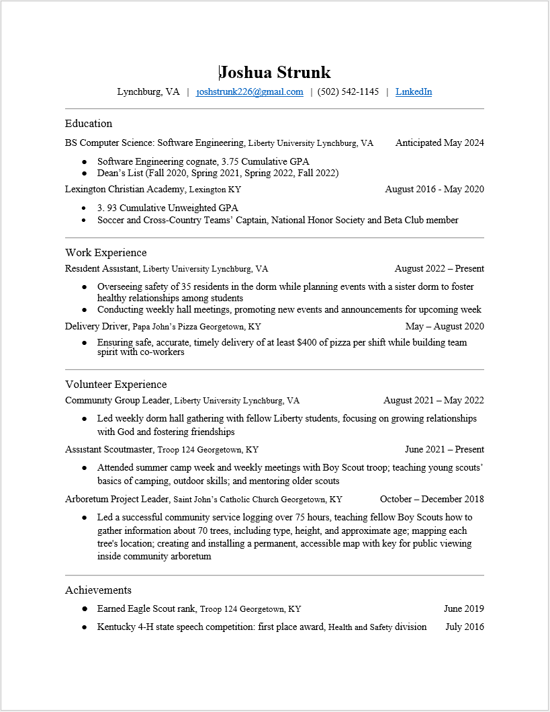

Education
BS Computer Science: Software Engineering, Liberty University Lynchburg, VA Anticipated May 2024;
- Software Engineering cognate, 3.75 Cumulative GPA
- Dean’s List (Fall 2020, Spring 2021, Spring 2022, Fall 2022)
Lexington Christian Academy, Lexington KY May 2020
- 3. 93 Cumulative Unweighted GPA
- Soccer and Cross-Country Teams’ Captain, National Honor Society and Beta Club member
Work Experience
Resident Assistant, Liberty University Lynchburg, VA August 2022 – Present
- Overseeing safety of 35 residents in the dorm while planning events with a sister dorm to foster healthy relationships among students
- Conducting weekly hall meetings, promoting new events and announcements for upcoming week
Delivery Driver, Papa John’s Pizza Georgetown, KY May – August 2020
- Ensuring safe, accurate, timely delivery of at least $400 of pizza per shift while building team spirit with co-workers
Volunteer Experience
Community Group Leader, Liberty University Lynchburg, VA August 2021 – May 2022
- Led weekly dorm hall gathering with fellow Liberty students, focusing on growing relationships with God and fostering friendships
Assistant Scoutmaster, Troop 124 Georgetown, KY June 2021 – Present
- Attended summer camp week and weekly meetings with Boy Scout troop; teaching young scouts’ basics of camping, outdoor skills; and mentoring older scouts
Arboretum Project Leader, Saint John’s Catholic Church Georgetown, KY October – December 2018
- Led a successful community service logging over 75 hours, teaching fellow Boy Scouts how to gather information about 70 trees, including type, height,
and approximate age; mapping each tree's location; creating and installing a permanent, accessible map with key for public viewing inside community arboretum
Achievements
- Earned Eagle Scout rank, Troop 124 Georgetown, KY
June 2019
- Kentucky 4-H state speech competition: first place award, Health and Safety division
July 2016
